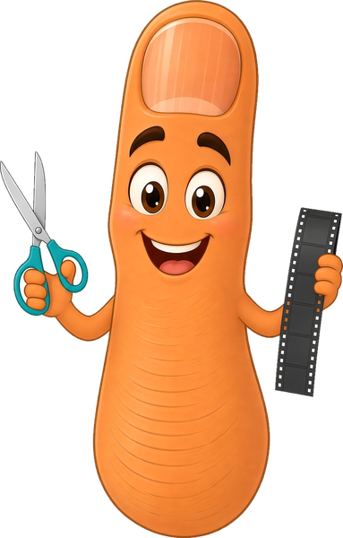
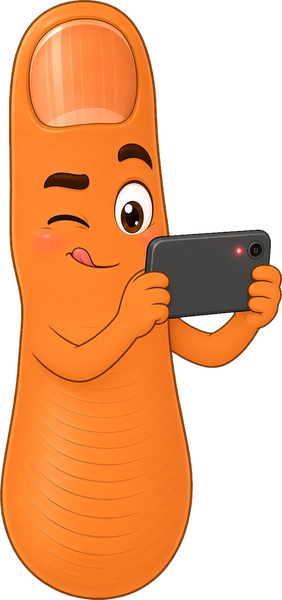
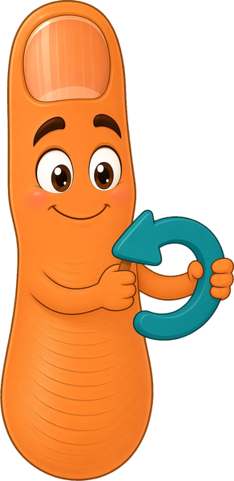

the idea
A cut ends one shot and starts the next

Every video you've watched is a row of shots joined by cuts. A cut is the plainest edit there is: one shot stops and another starts on the very next frame. The viewer's brain joins the two and assumes they belong together.
A cut can do three jobs. It can skip time (the dough goes in, the loaf comes out). It can change the view (the whole kitchen, then the hands). It can change the subject (the baker, then a customer). Most of editing is choosing which shot comes next and the exact frame to switch on.
before you edit
Film six shots first
You need something to cut. Pick one small job that takes about a minute: making a sandwich, pouring a coffee, folding a paper airplane. Film it as six separate shots, and have the person do the job again for each one, so every shot has the whole thing in it. Tick them off as you get them.
four rules while you film
- Let every shot run for at least a slow count of ten, because short clips leave nothing to trim.
- Keep the phone still during a shot, and move it between shots.
- Count to three before the action starts and again after it ends. That pause gives you room to trim.
- Pick upright or sideways and keep it for all six.

Any six clips already on your phone will do for this chapter. You can also download free clips from a stock site such as Pexels or Pixabay and practice on those. Your own shots are better, because Chapter 12 ends with a video that's yours.
the cut
Cut in the middle of a move
Here are two shots of the same reach for a cup: one wide, one tight. Drag the slider to choose where the wide shot stops (the picture follows your thumb, so you can find the move). Choose where the tight shot starts. Then play it.
the tight shot starts
the trim
Trim the waiting off both ends
Three clips, 14 seconds. Each one has dead time before the action and after it. Nudge the start and end of each clip until the action is what's left, with no more than half a second of air on either side.

In RoughCut and most editing apps, trimming only changes which part of the clip plays. The full video stays on your phone as long as you keep the original, so you can always pull the edge back out. Trim hard, watch it, and loosen it if it feels rushed.
for real
Now do it on your own footage
- Open RoughCut, or any editor you like, and start a new project.
- Add three of your six shots in this order: wide, medium, tight.
- Give each shot one part of the job: the wide gets the start, the medium gets the middle, the tight gets the finish. Each moment should play once.
- Trim the start of each clip so it opens as its part begins to move.
- Trim the end of each clip so it closes just after that part stops.
- Play it through. If a cut feels late, trim a little more. If it feels rushed, give some back.
- Keep the project. Chapter 2 picks it up from here.
where it is in RoughCut
- On the Projects screen, tap + New.
- Tap + Media, then + Import, and pick your shots. Tap each one to add it to the timeline.
- To change the order, hold a clip until it lifts, then slide it.
- To trim, tap a clip to select it and drag either end.
- To trim one frame at a time, open the clip's Cut tab. RoughCut calls the start of a clip its In point and the end its Out point.
missions
Prove it
Six things to make happen. They tick off as you go.
the gym
Practice: make the call
Randomized drills. A wrong call resets your streak.
quiz